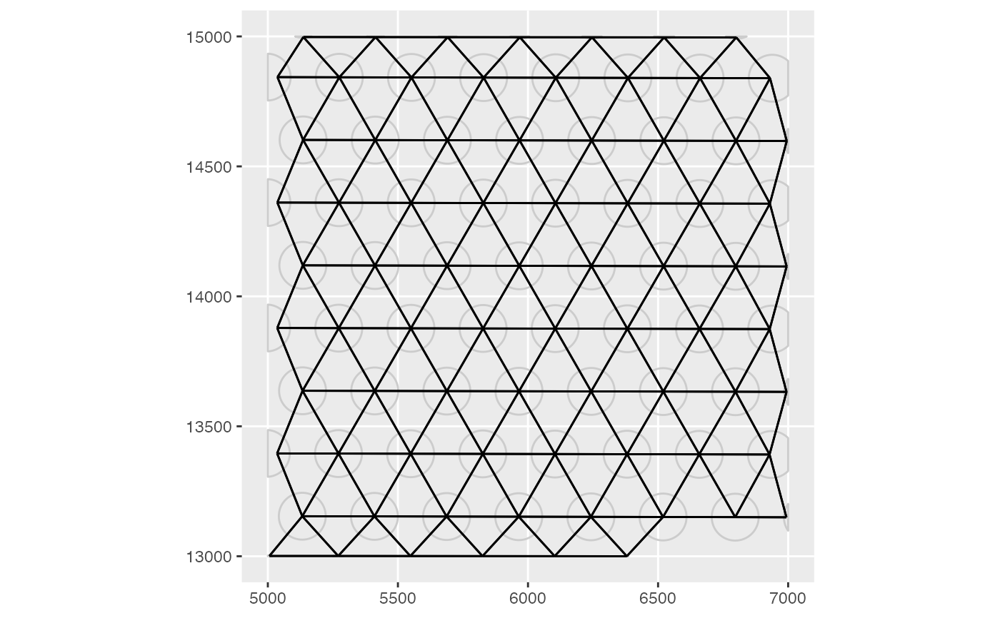
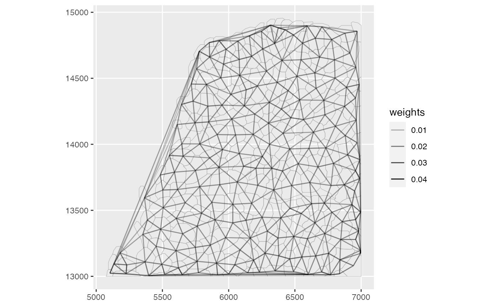

A ggplot version of spdep::plot.nb, reducing boilerplate for SFE
objects.
Usage
plotColGraph(
sfe,
colGraphName = 1L,
colGeometryName = 1L,
sample_id = "all",
weights = FALSE,
segment_size = 0.5,
geometry_size = 0.5,
ncol = NULL,
bbox = NULL
)
plotAnnotGraph(
sfe,
annotGraphName = 1L,
annotGeometryName = 1L,
sample_id = "all",
weights = FALSE,
segment_size = 0.5,
geometry_size = 0.5,
ncol = NULL,
bbox = NULL
)Arguments
- sfe
A
SpatialFeatureExperimentobject.- colGraphName
Name of graph associated with columns of the gene count matrix to be plotted.
- colGeometryName
Name of a
colGeometrysfdata frame whose numeric columns of interest are to be used to compute the metric. UsecolGeometryNamesto look up names of thesfdata frames associated with cells/spots.- sample_id
Sample(s) in the SFE object whose cells/spots to use. Can be "all" to compute metric for all samples; the metric is computed separately for each sample.
- weights
Whether to plot weights. If
TRUE, then transparency (alpha) of the segments will represent edge weights.- segment_size
Thickness of the segments that represent graph edges.
- geometry_size
Point size (for POINT geometries) or line thickness (for LINESTRING and POLYGON) to plot the geometry in the background.
- ncol
Number of columns if plotting multiple features. Defaults to
NULL, which means using the same logic asfacet_wrap, which is used bypatchwork'swrap_plotsby default.- bbox
A bounding box to specify a smaller region to plot, useful when the dataset is large. Can be a named numeric vector with names "xmin", "xmax", "ymin", and "ymax", in any order. If plotting multiple samples, it should be a matrix with sample IDs as column names and "xmin", "ymin", "xmax", and "ymax" as row names. If multiple samples are plotted but
bboxis a vector rather than a matrix, then the same bounding box will be used for all samples. You may see points at the edge of the geometries if the intersection between the bounding box and a geometry happens to be a point there. IfNULL, then the entire tissue is plotted.- annotGraphName
Name of the annotation graph to plot.
- annotGeometryName
Name of the
annotGeometry, which is associated with the graph specified withannotGraphName, for spatial coordinates of the graph nodes and for context.
Examples
library(SpatialFeatureExperiment)
library(SFEData)
library(sf)
#> Linking to GEOS 3.10.2, GDAL 3.4.1, PROJ 8.2.1; sf_use_s2() is TRUE
sfe <- McKellarMuscleData("small")
#> see ?SFEData and browseVignettes('SFEData') for documentation
#> loading from cache
colGraph(sfe, "visium") <- findVisiumGraph(sfe)
plotColGraph(sfe, colGraphName = "visium", colGeometryName = "spotPoly")

# Make the myofiber segmentations a valid POLYGON geometry
ag <- annotGeometry(sfe, "myofiber_simplified")
ag <- st_buffer(ag, 0)
ag <- ag[!st_is_empty(ag), ]
annotGeometry(sfe, "myofiber_simplified") <- ag
annotGraph(sfe, "myofibers") <-
findSpatialNeighbors(sfe,
type = "myofiber_simplified", MARGIN = 3,
method = "tri2nb", dist_type = "idw"
)
plotAnnotGraph(sfe,
annotGraphName = "myofibers",
annotGeometryName = "myofiber_simplified",
weights = TRUE
)
